The Mexican Biobank (MXB) is establishing the first large-scale genomic resource with nationwide coverage outside Europe and North America, with over 6,000 samples processed in the current phase. The knowledge generated through this initiative will enhance public health in Mexico, advance global human genetics research, and deepen our understanding of human evolution.

Developed and analyzed entirely in Mexico, the MXB is a multi-institutional effort that builds upon the National Health Survey conducted in 2000 by the National Institute of Public Health (INSP), joining forces with the National Institute of Medical Sciences and Nutrition (INCMNSZ) to process DNA and serum samples for biochemical profiling, and with the Cinvestav Research Center to generate genome-wide data for population genetic analyses. Insights from this project will open new avenues for local research and training, fostering a more inclusive and global view of human health and evolution.
Mexico’s population is highly structured and genetically diverse, shaped by centuries of migration, admixture, and adaptation to distinct environments. This complexity is reflected in the varied burden of cardiometabolic and infectious diseases across regions and communities.
Through large-scale genome-wide association studies (GWAS), the MXB project is identifying genetic factors that influence how different Mexican subpopulations respond to local infectious agents. These studies are uncovering genetic variants unique to specific ancestries, which may protect against or predispose to certain diseases. The discoveries emerging from this work will inform targeted biomedical research, including the development of population-specific drugs and vaccines.
The resulting genetic catalog—the first comprehensive one in Mexico—will also guide more accurate genetic testing and support personalized medicine initiatives. By revealing the country’s intricate genetic landscape, the MXB ensures that the diverse health needs of Mexico’s populations are understood and addressed.
Beyond its scientific goals, the MXB is committed to building in-country research capacity in genomics and data science. By locally performing all research phases of the project, from sampling and processing, to genotyping, sequencing, and bioinformatic analyses, the MXB is strengthening the local leadership and international competitiveness of Mexico in large-scale genomics initiatives globally.
Moreover, through specialized workshops and collaborative training programs, local researchers are being equipped with the skills to analyze and interpret genomic data. This includes the development of MexVar, a user-friendly platform designed to explore clinically relevant variation in the MXB taking ancestry and geography into account.
Until recently, most human genetics research has relied on populations of European descent, shaping our understanding of the genetic architecture of complex traits and the models used to study them. As a result, many global predictions about health, disease, and evolution are affected by this Eurocentric bias.
The Mexican Biobank offers a timely and powerful opportunity to test, refine, and expand existing evolutionary and statistical models. It provides a much-needed reference dataset for admixed populations, enabling the development of more accurate and equitable approaches to studying human genetic diversity.
This unique dataset will also advance our understanding of human evolutionary history. It will enable researchers to explore how beneficial and deleterious genetic variants behave through admixture, migration, population bottlenecks, and local adaptation—processes that remain poorly understood.
By tracing demographic and admixture events throughout the history of the Americas, the MXB will not only expand global knowledge of human evolution but also strengthen Mexico’s scientific sovereignty and self-understanding, illuminating the genetic narratives of its many populations and identities.